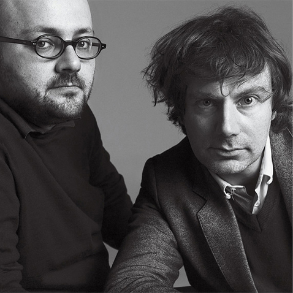

mmparis@mmparis.com
+1 555 5555 55
media
Biography

63 words from M/M
M | M Paris
Founded
1992 Paris, France by Michael Amzalag & Mathias Augustyniak.
Studied
Michael Amzalag 1990 Ecole Nationale Supérieure des Arts Décoratifs, Paris. Mathias Augustyniak 1991 MA Graphic Design & Art Direction, Royal College of Art, London.
63 words from M/M
« An image never interests us as such. Its relevance lies in the fact that it contains the sum of preceding dialogues, stories, experiences with various interlocutors, and the fact that it induces a questioning of these preexisting values. This it what makes for us a pertinent image. A good image should be in between two others, a previous one and another to come.»